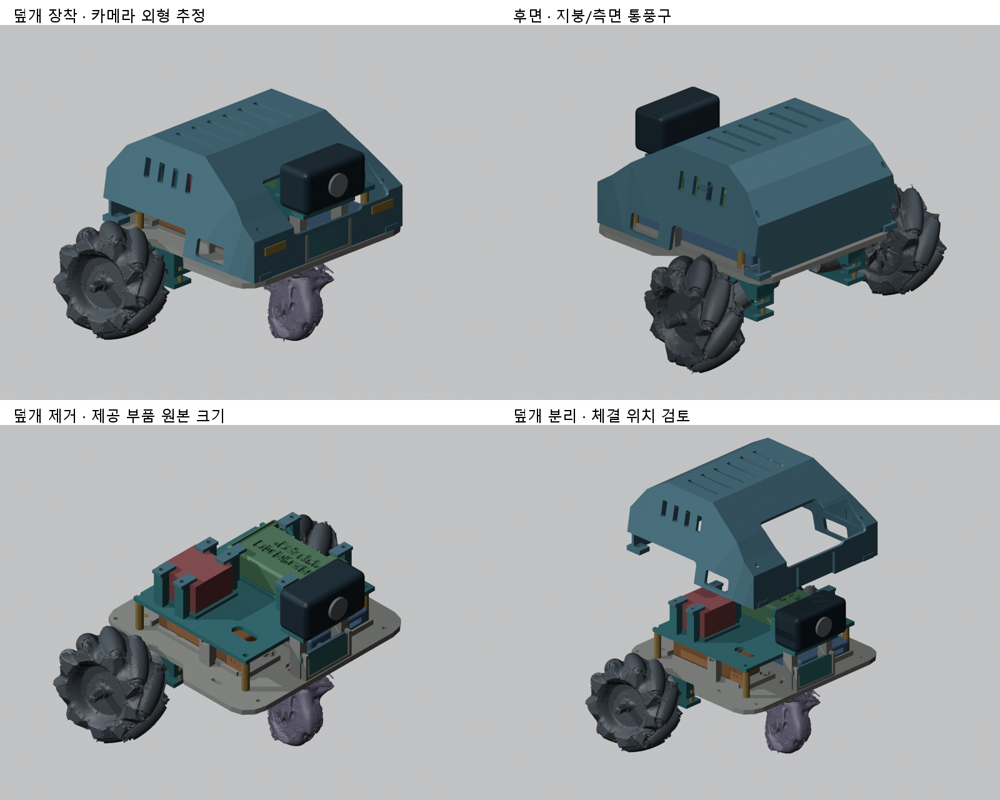

2026-10-29 / A · PLA 설계 기준 · 3DWOX 1

부품표의 ipTIME A1000mini를 기준으로 내장 안테나형 USB 동글을 표현했습니다. A1000mini-UA 외장 안테나 제품과 구분합니다. 본체 24.6×16×8mm는 정확한 모델 치수로 검증하지 못한 임시값이며, USB 연결 후 돌출 공간은 30mm를 가정했습니다. 포트 위치도 제공된 라즈베리파이 외곽 STL을 기준으로 추정했습니다. 이 형상은 출력 대상이 아닙니다.
STL_슬라이서검사전 폴더는 새로 설계한 부품만 포함합니다. 수업 원본 STL은 포함하지 않았습니다. 단위 mm, 배율100%입니다. 아래 크기는 파일에 저장한 출력 방향의 외곽 크기입니다.
| 파일 · 각1개 | 외곽 크기(mm) |
|---|---|
| P01_한장바닥판_190x185x5.stl | 190.0 × 185.0 × 45.0 |
| P02_분리선반_150x130x4.stl | 150.0 × 130.0 × 35.0 |
| P09_카메라받침_추정.stl | 60.0 × 26.0 × 4.0 |
| P04_보조배터리_고정가로대.stl | 88.0 × 10.0 × 3.0 |
| P05_리포배터리_고정가로대.stl | 56.0 × 10.0 × 3.0 |
| P06_L_U받침_V홈.stl | 31.5 × 46.0 × 20.0 |
| P07_L_평판.stl | 20.0 × 46.0 × 4.0 |
| P06_R_U받침_V홈.stl | 31.5 × 46.0 × 20.0 |
| P07_R_평판.stl | 20.0 × 46.0 × 4.0 |
| P10_해치백덮개.stl | 172.0 × 183.0 × 86.5 |
| P11_PI_脱落防止.stl | 18.0 × 10.0 × 3.0 |
| P11_PI_脱落防止.001.stl | 18.0 × 10.0 × 3.0 |
| P11_PI_脱落防止.002.stl | 18.0 × 10.0 × 3.0 |
| P11_PI_脱落防止.003.stl | 18.0 × 10.0 × 3.0 |
| P11_DRIVER_脱落防止.stl | 18.0 × 10.0 × 3.0 |
| P11_DRIVER_脱落防止.001.stl | 18.0 × 10.0 × 3.0 |
| P11_DRIVER_脱落防止.002.stl | 18.0 × 10.0 × 3.0 |
| P11_DRIVER_脱落防止.003.stl | 18.0 × 10.0 × 3.0 |
| P12_센서뒤고정띠.stl | 56.0 × 3.0 × 6.0 |
바닥판·선반·평판은 넓은 면을 아래로, U받침은 옆면을 아래로 내보냈습니다. 덮개는 지붕이 아래인 후보 방향입니다. 경사면·개구·너트 포켓에는 지지대가 필요할 수 있어 슬라이서에서 층별 경로를 확인해야 합니다. 210×200×195mm 범위 검사는 브림과 노즐 이동 여유를 포함하지 않습니다.
랜카드 쪽 개구, 하부 흡기와 지붕/측면 통풍구를 모델링했습니다. 새 팬이나 별도 안테나를 추가하지 않았습니다. 전파 세기·실제 온도·팬 흡배기 방향·주행 성능은 시험하지 않았습니다.
engineering_report.json: 원본파일6개와 참고 메시8개의 해시, 배율1, 출력부품 연결성·닫힘·외곽 크기. cover_interference_audit.json: 덮개 표면과 다른 메시의 교차 검사. 면 접촉도 검출되며 내부 포함과 회전 궤적을 판정하는 검사는 아닙니다.
실제 장비 카트리지·프린터 프로필과 슬라이서가 확인되지 않아 G-code는 없습니다. 본 ZIP의 STL은 검사 전 작업본입니다. 카메라·센서 체결 미완료 상태를 숨기고 바로 출력 가능한 최종본으로 표시하지 않았습니다.